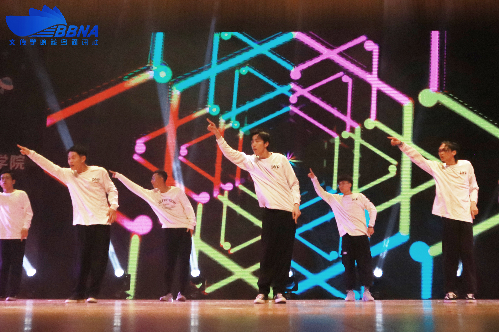
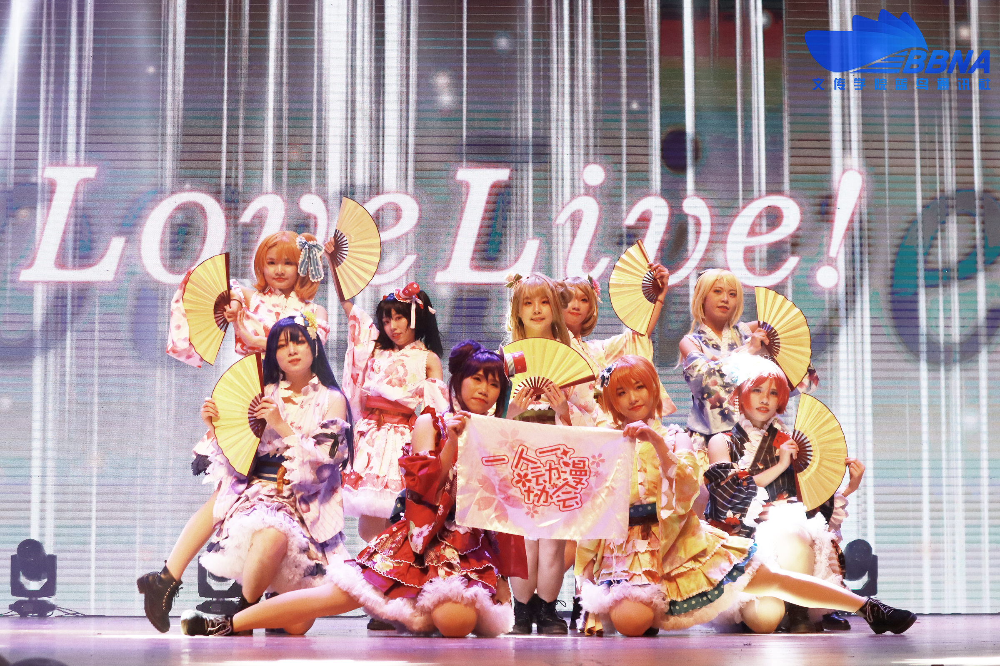

节目开场，由DMC舞蹈协会带来的《酣舞恒梦》瞬间点燃了晚会的气氛，而Jazz、Popping等酷炫的舞蹈串烧感染全场。紧接着，校团委廖丽鹂老师上台致辞，她表示学生社团一直是高校第二课堂的重要组成部分，是大学生开发潜能、展示自我的舞台。相信在今晚缤纷夜的舞台上，同学们定能绽放异彩，充分挖掘兴趣潜能，让校园洋溢青春的气息。

一人一动漫协会的二次元美少女们活力登场，以《初心未忘，为梦舞动欲再于辉夜城起舞》为主题，给大家带来了Love Live！的舞台舞蹈，表演者们身穿与动漫人物一致的cosplay服装，在舞台上还原着动漫中的场景，唱跳结合带着观众们进入了奇思妙想的动漫世界。

随着锣鼓音乐的响起，威风凛凛的两只金狮在灯光下焕发金光，神采奕奕，时而威武勇猛地蹬地直立、腾空跳跃，时而又显出一副十分乖顺的模样，坐在地上眨巴着眼睛，逗人喜爱。接着，炫彩的双截棍表演动作潇洒威武，挥洒自如，掀起台下一片欢呼。武术协会的演出《武德嵌入魂 武训始于心》向观众们展现了中华武术之美。